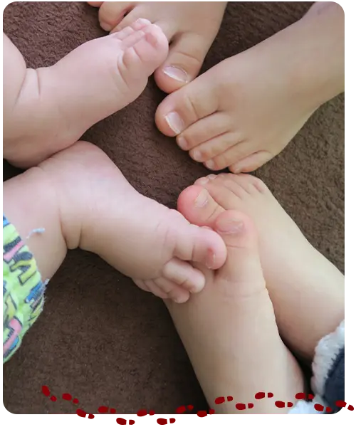

01
これからも自分の足で
30代からはじめる靴選び
これからも自分の足で
歩くために。
五十嵐自身も、外反母趾やモートン病で歩くのがつらい時期を経験しました。だからこそ、痛みを我慢する前に、今の足と靴を見直すことを大切にしています。
大人の靴選びを詳しく見る →足から健康に。
自分の足で歩けることは、毎日の喜びにつながります。 足の形、今の靴、歩く姿を見ながら、あなたに合う一足を一緒に考えます。


同じサイズでも、足の形は一人ひとり違います。まず困っていることを伺い、足・靴・歩き方を確かめてから、暮らしに合う方法をご提案します。
年齢や生活の変化に合わせて、無理なく歩き続けるための靴選びをお手伝いします。
30代からはじめる靴選び
五十嵐自身も、外反母趾やモートン病で歩くのがつらい時期を経験しました。だからこそ、痛みを我慢する前に、今の足と靴を見直すことを大切にしています。
大人の靴選びを詳しく見る →お子さまの足育
初めてのお子さまの靴選びが難しいのは当然です。足を測り、きちんと履かせ、歩く姿まで見ながら、今の足に合う靴を一緒に選びます。
子ども靴の選び方を見る →五十嵐が相談やセミナーでお伝えしてきたことを、専門機関の公開情報と照らし合わせ、家庭でも確認できる形にまとめました。
「何を選べばよいか分からない」からで大丈夫です。普段の靴と、気になっていることをそのままお持ちください。
 WAKAYAMA · ANDANTINO
WAKAYAMA · ANDANTINO
一人ひとりのお話をゆっくり伺うため、前もってご予約をお願いしています。 営業日でも外出する場合がありますので、ご来店前にご連絡ください。